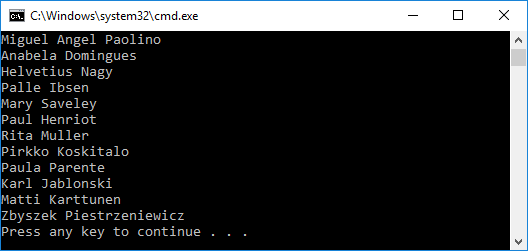

Getting started with LINQ To DB on .NET Framework with a Existing Database
In this walkthrough, you will build a console application that performs basic data access against a Microsoft SQL Server database using LINQ To DB. You will use existing database to create your model.
Tip
You can view this article's sample on GitHub.
Prerequisites
The following prerequisites are needed to complete this walkthrough:
Tip
Also there is Northwind Database script file which can be executed using Microsoft SQL Server Management Studio
Create a new project
Open Visual Studio
File > New > Project...
From the left menu select Templates > Visual C# > Windows Classic Desktop
Select the Console App (.NET Framework) project template
Ensure you are targeting .NET Framework 4.5.1 or later
Give the project a name and click OK
Install LINQ To DB
To use LINQ To DB, install the package for the database provider(s) you want to target. This walkthrough uses SQL Server. For a list of available providers see Database Providers.
Tools > NuGet Package Manager > Package Manager Console
Run
Install-Package linq2db.SqlServer
Generate model from database
Now it's time to generate your model from database.
Project > New Folder...
Enter DataModels as the name and click OK
DataModels > Add Item... and select Text Template
Enter Northwind.tt as the name and click OK
Copy the content from the file Project > LinqToDB.Templates\CopyMe.SqlServer.tt.txt
Modify host, database name and credentials for your SQL Server in
LoadSqlServerMetadatafunction callSave Northwind.tt - it should invoke model generation
Tip
There are many ways to customize generation process. Follow this link for details.
Use your model
You can now use your model to perform data access.
- Open App.config
- Replace the contents of the file with the following XML (correct connection string based on your server location and credentials)
<?xml version="1.0" encoding="utf-8"?>
<configuration>
<connectionStrings>
<add name="MyDatabase" providerName="System.Data.SqlClient"
connectionString="Data Source=.;Database=Northwind;Integrated Security=SSPI;" />
</connectionStrings>
</configuration>
Open Program.cs
Replace the contents of the file with the following code
using System;
using System.Linq;
namespace GetStarted
{
class Program
{
static void Main(string[] args)
{
using (var db = new DataModel.NorthwindDB())
{
var q =
from c in db.Customers
select c;
foreach (var c in q)
Console.WriteLine(c.ContactName);
}
}
}
}
- Debug > Start Without Debugging
You will see list of Contact names.
